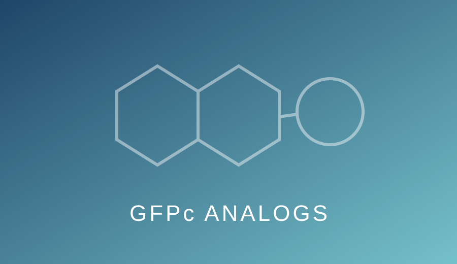
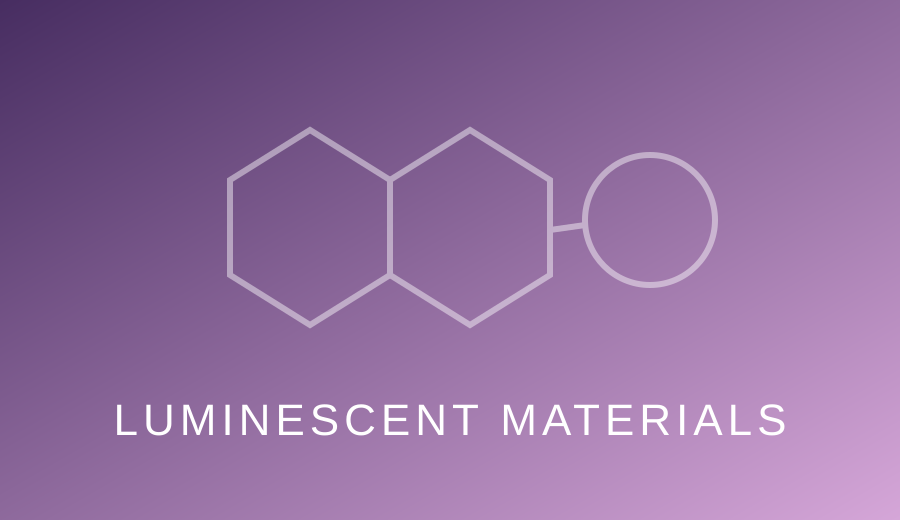
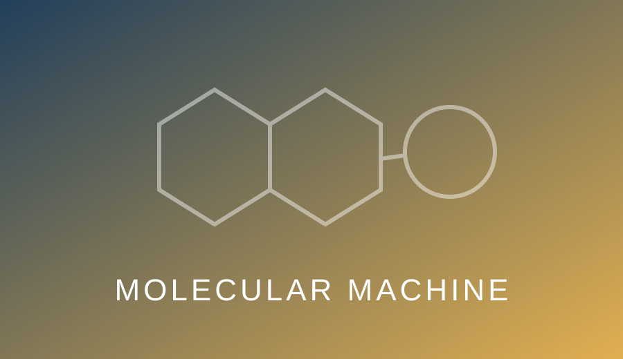
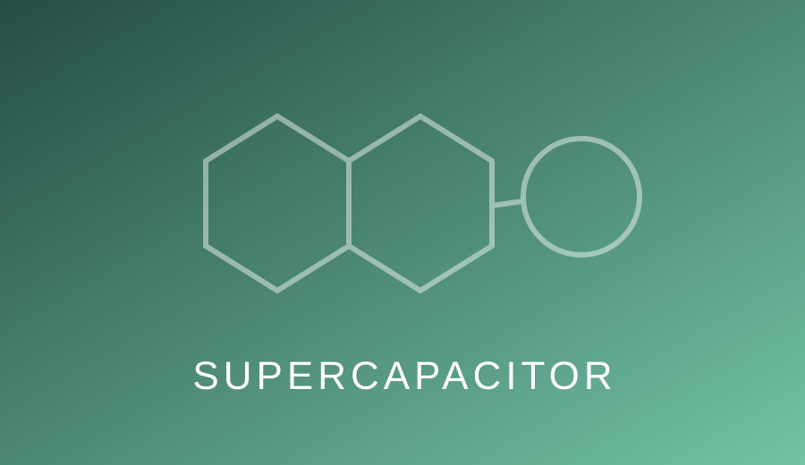

GFPc Analogs
Our laboratory investigates photophysical and photochemical properties of fluorescent GFP chromophore analogs, including fluorescence enhancement, aggregation effects, cell imaging, patterning and information encoding.
Functional organic molecules and materials designed to respond, move, emit and store energy.

Our laboratory investigates photophysical and photochemical properties of fluorescent GFP chromophore analogs, including fluorescence enhancement, aggregation effects, cell imaging, patterning and information encoding.
Pentiptycene and related non-planar scaffolds provide unusual packing environments and cavities for mechanochromism, host–guest recognition and multi-stimulus solid-state luminescence.


We develop light- and electrochemically gated molecular switches, brakes and mechanically distinct molecular states using rigid, non-planar molecular frameworks.
Research on conducting polymers and hybrid electrodes targets high conductivity, large accessible surface area, rapid charge–discharge behavior and improved electrochemical stability.
